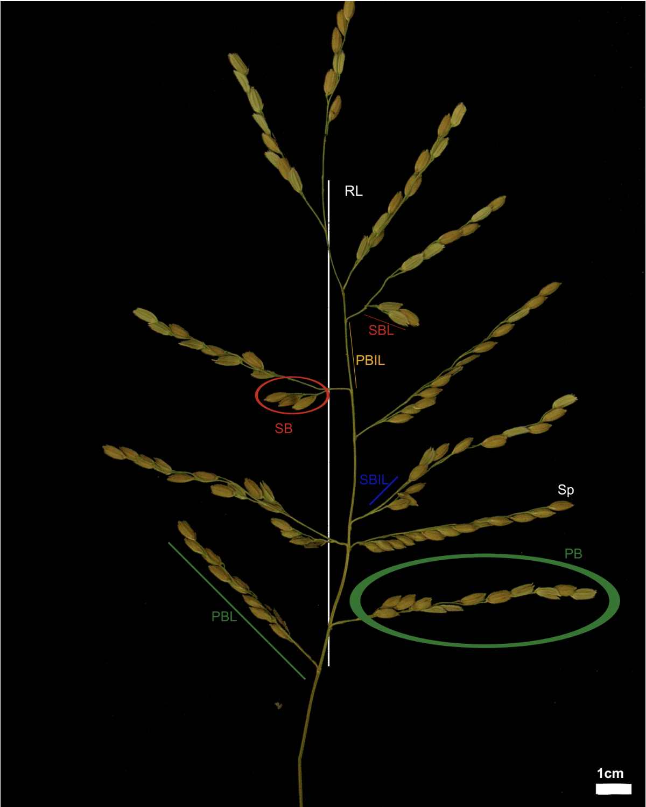
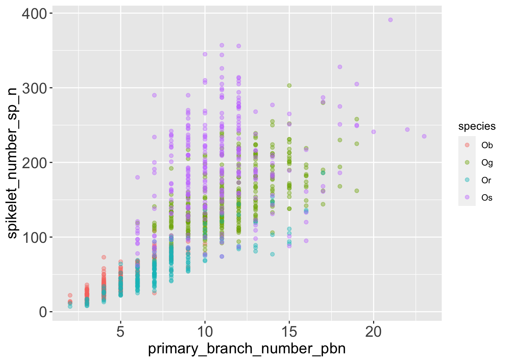
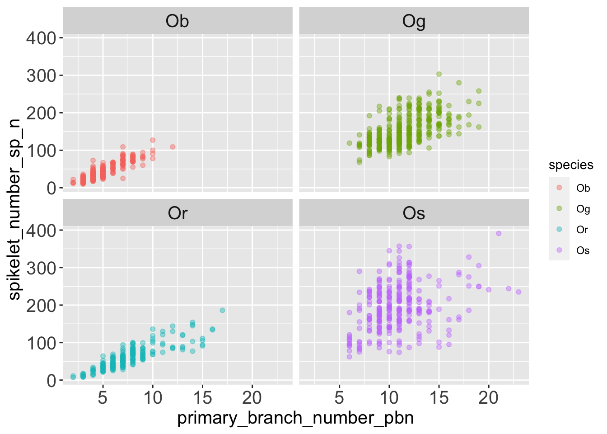
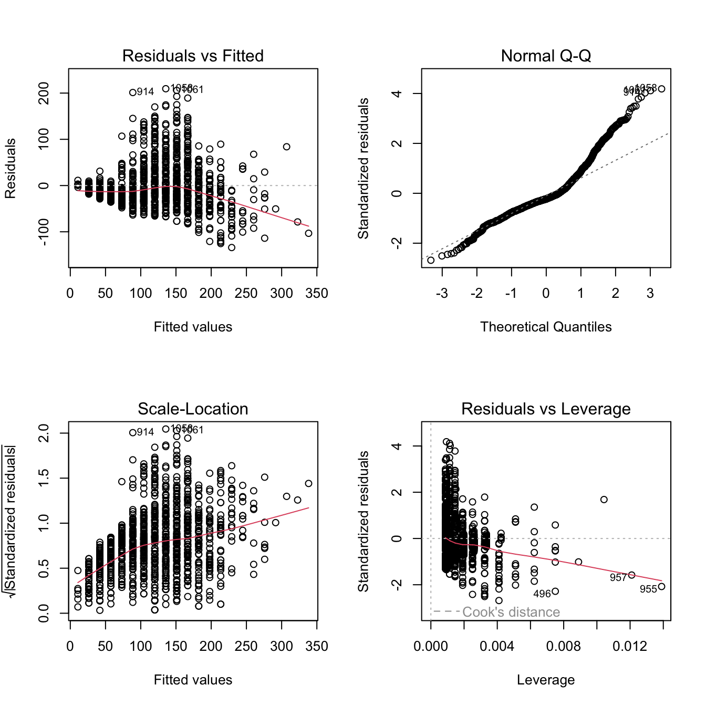
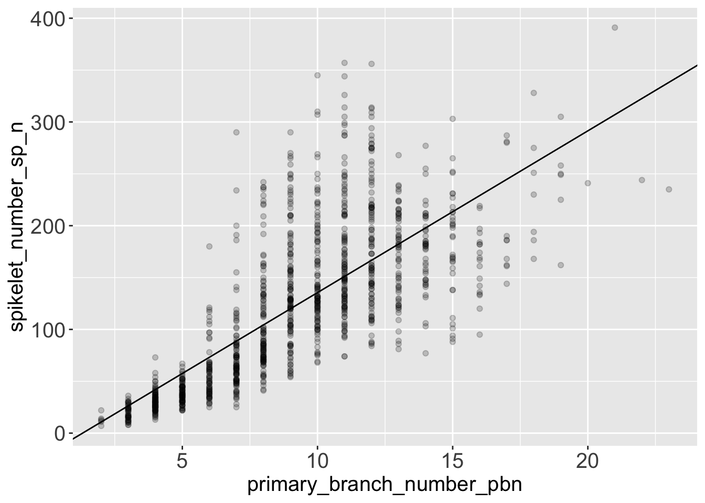
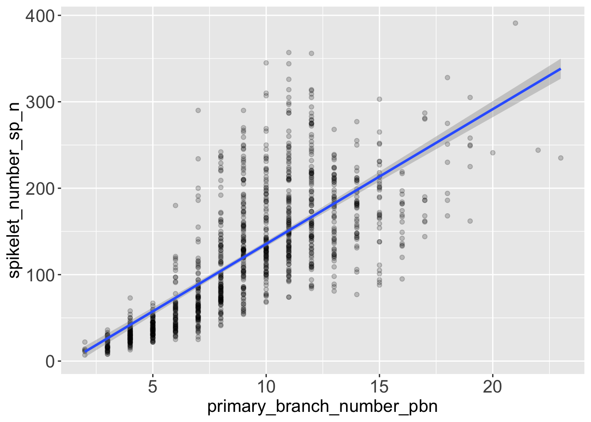
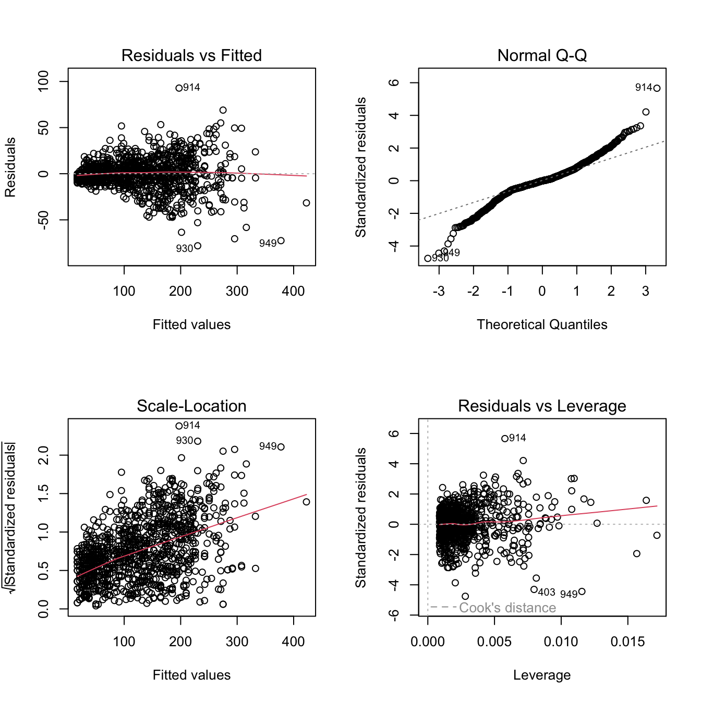

library(dplyr)
library(readr)
library(magrittr)
library(tidyr)
library(tibble)
library(ggplot2)
library(here)A Glimpse to Linear Models
1 Linear Models
Linear model are historically the first type of supervised model that is encountered when studying statistical learning, and are still probably the most used in biology, ecology and plenty of other fields. The most simple form of linear model is linear regression.
You can use linear model to test if a combination of one or more predictor variables can “explain”, infer or predict a response variable.
For reference on linear models check:
- Chapters 3 to 7 of ISLR.
- Chapters 16, 17 and 18 of Introduction to Data Science.
- Analising Data Using Linear Models, for students in social, behavioural and management science, by Stéphanie M. van den Berg, basically the whole book.
Let’s try linear regression in R.
2 Packages
First let’s load a selection of packages that we have been using throughout the lessons.
Then, let’s load a couple of packages specific for statistical modeling from the tidymodels framework.
library(broom)
library(parsnip)And let’s tweak the ggplot theme so graphics are easier to read on this page.
theme_update(axis.title = element_text(size = 15),
axis.text = element_text(size = 15),
strip.text = element_text(size = 15))3 The rice dataset
We will keep working on the rice dataset, introduced in the slides on explorative data analysis.
3.1 Load and check
3.1.1 Read the data
I’ve mirrored the data on my instance of github, let’s read them from there.
rice <-
paste0(
'https://raw.githubusercontent.com/othomantegazza',
'/mawazo-summer-school/main/data-int/rice.csv'
) %>%
read_delim(delim = ';') %>%
janitor::clean_names()Rows: 1140 Columns: 18
── Column specification ────────────────────────────────────────────────────────
Delimiter: ";"
chr (6): Id, Species, Accession Name, Origine Continent, Type (Wild/Cultiva...
dbl (12): Replicate_nb (1/2), Plant_nb (1 to 3), Panicle_nb (1 to 3), Rachis...
ℹ Use `spec()` to retrieve the full column specification for this data.
ℹ Specify the column types or set `show_col_types = FALSE` to quiet this message.3.1.2 Structure of the data
Let’s also check how the data look like:
rice# A tibble: 1,140 × 18
id species acces…¹ origi…² type_…³ sowin…⁴ repli…⁵ plant…⁶ panic…⁷ rachi…⁸
<chr> <chr> <chr> <chr> <chr> <chr> <dbl> <dbl> <dbl> <dbl>
1 Ob01 Ob B197 Africa Wild Cali-C… 1 1 1 8.1
2 Ob01 Ob B197 Africa Wild Cali-C… 1 1 2 6.51
3 Ob01 Ob B197 Africa Wild Cali-C… 1 1 3 4.67
4 Ob01 Ob B197 Africa Wild Cali-C… 1 2 1 5.96
5 Ob01 Ob B197 Africa Wild Cali-C… 1 2 2 5.99
6 Ob01 Ob B197 Africa Wild Cali-C… 1 2 3 6.23
7 Ob01 Ob B197 Africa Wild Cali-C… 1 3 1 5.54
8 Ob01 Ob B197 Africa Wild Cali-C… 1 3 2 4.15
9 Ob01 Ob B197 Africa Wild Cali-C… 1 3 3 4.71
10 Ob01 Ob B197 Africa Wild Cali-C… 2 1 1 6.95
# … with 1,130 more rows, 8 more variables: primary_branch_number_pbn <dbl>,
# average_of_primary_branch_length_in_cm_pbl <dbl>,
# average_of_internode_along_primary_branch_in_cm_pbil <dbl>,
# secondary_branch_number_sbn <dbl>,
# average_of_secondary_branch_length_in_cm_sbl <dbl>,
# average_of_internode_along_secondary_branch_in_cm_sbil <dbl>,
# tertiary_branch_number_tbn <dbl>, spikelet_number_sp_n <dbl>, and …
# ℹ Use `print(n = ...)` to see more rows, and `colnames()` to see all variable namesrice %>% glimpse()Rows: 1,140
Columns: 18
$ id <chr> "Ob01", "Ob01",…
$ species <chr> "Ob", "Ob", "Ob…
$ accession_name <chr> "B197", "B197",…
$ origine_continent <chr> "Africa", "Afri…
$ type_wild_cultivated <chr> "Wild", "Wild",…
$ sowing_localisation <chr> "Cali-Colombia"…
$ replicate_nb_1_2 <dbl> 1, 1, 1, 1, 1, …
$ plant_nb_1_to_3 <dbl> 1, 1, 1, 2, 2, …
$ panicle_nb_1_to_3 <dbl> 1, 2, 3, 1, 2, …
$ rachis_length_rl_in_cm <dbl> 8.10, 6.51, 4.6…
$ primary_branch_number_pbn <dbl> 5, 5, 4, 4, 4, …
$ average_of_primary_branch_length_in_cm_pbl <dbl> 6.73, 6.26, 6.9…
$ average_of_internode_along_primary_branch_in_cm_pbil <dbl> 2.03, 1.63, 1.5…
$ secondary_branch_number_sbn <dbl> 5, 3, 2, 5, 1, …
$ average_of_secondary_branch_length_in_cm_sbl <dbl> 1.74, 1.51, 1.9…
$ average_of_internode_along_secondary_branch_in_cm_sbil <dbl> 0.99, 0.72, 1.6…
$ tertiary_branch_number_tbn <dbl> 0, 0, 0, 0, 0, …
$ spikelet_number_sp_n <dbl> 38, 38, 30, 35,…rice %>% count(species)# A tibble: 4 × 2
species n
<chr> <int>
1 Ob 264
2 Og 370
3 Or 215
4 Os 291rice %>% pull(accession_name) %>% n_distinct()[1] 913.1.3 Content and aim of the data
The dataset contains phenotypic measurements of 1140 rice panicle from 91 rice accessions of 4 different rice species.
The aim of the paper in which this dataset is published is to compare panicles at a phenotypic and transcriptomic level for a combination of 4 African and Asian, wild and domesticated rice species.
| species_id | species | continent | status |
|---|---|---|---|
| Ob | Oryza barthii | African | Wild |
| Og | Oryza glaberrima | African | Cultivated |
| Or | Oryza rufipogon | Asian | Wild |
| Os | Oryza sativa | Asian | Cultivated |
In the picture below, from the original article (CC-BY-NC) you can find a graphical explanation of the phenotypic features measured in the rice dataset.

3.2 Question
Let’s try to answer the question: Can we use the number of branches (PB e SB) on a panicle to explain the number of spikelets (SP) on the same panicle? In case how?
3.3 Visualize the data first
To answer the question, let’s first visualize the data to get an idea of how they are distributed.
rice %>%
ggplot(aes(x = primary_branch_number_pbn,
y = spikelet_number_sp_n,
colour = species)) +
geom_point(alpha = .4) 
It seems that the number of spikelets grows with the number of primary branches on a panicle. The pattern might not be perfectly linear, and there might be some variation among different rice species.
Let’s also visualize the same data divided in facets, to get a clearer idea of how different species behave.
rice %>%
ggplot(aes(x = primary_branch_number_pbn,
y = spikelet_number_sp_n,
colour = species)) +
geom_point(alpha = .4) +
facet_wrap(facets = 'species')
The data points are more dispersed vertically in Og (Oryza glaberrima) and Oryza sativa. Those two species are domesticated species, they produce many secondary branches, this “uncouples” the number of spikelets from the number of primary branches.
Can we describe this observation with a statistical model using linear regression?
4 A syntax for models
How do we define a model in R? Let’s start from a generic regression.
4.1 Generic linear regression
In a simple linear model, such as linear regression, we are modelling the response variable Y as a combination two coefficients a and b that define the intercept and the slope of the line, the predictor X and an error term that, in absence of a better explanation, we hypothesize as being random gaussian.
\[Y = a + b * X + error\]
We can express the same concept with a tilde ~ formula.
\[Y \sim a + b * X\] If we substitute the generic terms of the equation above with the variables from the rice dataset, we can say that, in the rice problem, we are trying to guess the intercept and slope coefficients for this equation.
\[spikelets = intercept + slope * primary\_branches + error\] Let’s use a tilde formula again.
\[spikelets \sim intercept + slope * primary\_branches\]
With this syntax we can express models with any number of predictors, or any mathematical combination of them.
\[Y = a + b_1X_1 + b\_2X_2 + ... + b\_nX_n + error\] ## Model formulas in R
R has adopted the tilde model formula definition that we have seen above to define models within it’s function, such as lm(). So, for example, the formula: spikelet_number_sp_n ~ primary_branch_number_pb will use:
- The variable
spikelet_number_sp_nas response. - The
primary_branch_number_pbnas predictor. - The intercept and the slope get’s calculated automatically when we provide this formula and the associated data to the function
lm()
5 Run the model
We can declare and evaluate a linear model in R with the function lm().
Let’s run it with the formula mentioned above on the rice data.
fit <-
lm(
formula = spikelet_number_sp_n ~ primary_branch_number_pbn,
data = rice
)We have run a linear regression of spikelet_number_sp_n over primary_branch_number_pbn. And associated the results to the object fit. How do we see the results?
Just by calling the object fit, we can print on screen the slope and intercept estimated by the model.
fit
Call:
lm(formula = spikelet_number_sp_n ~ primary_branch_number_pbn,
data = rice)
Coefficients:
(Intercept) primary_branch_number_pbn
-20.44 15.60 In the next sessions we will explore the many available tools to get more information and diagnostics from the model.
5.1 Explore the results
5.1.1 A summary of the results
The summary() method prints:
- The coefficients that we’ve seen above (in this case the slope and the intercept of the linear regression line) with the associated T-statistics.
- R-squared and F-statistics measuring and scoring the overall model.
fit %>% summary()
Call:
lm(formula = spikelet_number_sp_n ~ primary_branch_number_pbn,
data = rice)
Residuals:
Min 1Q Median 3Q Max
-134.11 -28.79 -11.35 19.07 209.47
Coefficients:
Estimate Std. Error t value Pr(>|t|)
(Intercept) -20.4391 4.0043 -5.104 3.89e-07 ***
primary_branch_number_pbn 15.5966 0.4102 38.023 < 2e-16 ***
---
Signif. codes: 0 '***' 0.001 '**' 0.01 '*' 0.05 '.' 0.1 ' ' 1
Residual standard error: 50.08 on 1138 degrees of freedom
Multiple R-squared: 0.5596, Adjusted R-squared: 0.5592
F-statistic: 1446 on 1 and 1138 DF, p-value: < 2.2e-165.1.2 Diagnostic plots
If you use the plot() method on a fitted lm object, R prints a selection of 4 diagnostic plots.
par(mfrow = c(2, 2)) # organize the plots in a 2x2 grid
plot(fit)
5.2 Tidy the results with broom
To access the coefficients and statistics of the model systematically, what better choice than to tidy them in a tibble with the package broom

broom summarizes key information about models in tidy tibble()s. broom provides three verbs to make it convenient to interact with model objects:
tidy()summarizes information about model components.glance()reports information about the entire model.augment()adds information about observations to a dataset.
Let’s check broom’s main functions.
5.2.1 Glance the results of the linear regression
glance() reports information about the entire model, similar to what we have seen in the last lines of the output of summary(), but in a tibble.
fit %>%
glance() %>%
glimpse()Rows: 1
Columns: 12
$ r.squared <dbl> 0.5595511
$ adj.r.squared <dbl> 0.559164
$ sigma <dbl> 50.08321
$ statistic <dbl> 1445.727
$ p.value <dbl> 7.518553e-205
$ df <dbl> 1
$ logLik <dbl> -6078.191
$ AIC <dbl> 12162.38
$ BIC <dbl> 12177.5
$ deviance <dbl> 2854478
$ df.residual <int> 1138
$ nobs <int> 11405.2.2 Tidy the results of the linear regression
tidy() summarizes information about model coefficients and their statistics in a tibble.
fit_tidy <-
fit %>%
tidy()
fit_tidy# A tibble: 2 × 5
term estimate std.error statistic p.value
<chr> <dbl> <dbl> <dbl> <dbl>
1 (Intercept) -20.4 4.00 -5.10 3.89e- 7
2 primary_branch_number_pbn 15.6 0.410 38.0 7.52e-2055.2.3 Augment the results of the linear regression
augment() returns a tibble with the fitted and residuals values for every observation that was used to train the model.
fit_augmented <-
fit %>%
augment()
fit_augmented# A tibble: 1,140 × 8
spikelet_number_sp_n primary_…¹ .fitted .resid .hat .sigma .cooksd .std.…²
<dbl> <dbl> <dbl> <dbl> <dbl> <dbl> <dbl> <dbl>
1 38 5 57.5 -19.5 0.00199 50.1 1.52e-4 -0.391
2 38 5 57.5 -19.5 0.00199 50.1 1.52e-4 -0.391
3 30 4 41.9 -11.9 0.00260 50.1 7.44e-5 -0.239
4 35 4 41.9 -6.95 0.00260 50.1 2.51e-5 -0.139
5 22 4 41.9 -19.9 0.00260 50.1 2.07e-4 -0.399
6 28 4 41.9 -13.9 0.00260 50.1 1.01e-4 -0.279
7 34 4 41.9 -7.95 0.00260 50.1 3.29e-5 -0.159
8 18 3 26.4 -8.35 0.00335 50.1 4.68e-5 -0.167
9 29 3 26.4 2.65 0.00335 50.1 4.71e-6 0.0530
10 38 6 73.1 -35.1 0.00151 50.1 3.72e-4 -0.702
# … with 1,130 more rows, and abbreviated variable names
# ¹primary_branch_number_pbn, ².std.resid
# ℹ Use `print(n = ...)` to see more rows5.3 Visualize the results of the linear regression
Once we have extracted the model coefficients with broom, we can use ggplot to represent the regression line graphically.
mod_intercept <- fit_tidy %>% slice(1) %>% pull(estimate)
mod_slope <- fit_tidy %>% slice(2) %>% pull(estimate)
rice %>%
ggplot(aes(x = primary_branch_number_pbn,
y = spikelet_number_sp_n)) +
geom_point(alpha = .2) +
geom_abline(intercept = mod_intercept,
slope = mod_slope)
It’s basically the same result that we get if we add a geom_smooth() to the graphic, with the parameter method = 'lm'.
rice %>%
ggplot(aes(x = primary_branch_number_pbn,
y = spikelet_number_sp_n)) +
geom_point(alpha = .2) +
geom_smooth(method = 'lm')`geom_smooth()` using formula 'y ~ x'
5.4 Conclusions from the model and from the graph
- The model suggests that the number of spikelets grows with the number of primary branches. More precisely, the model estimates that on average, you get 15.6 spikelets every new primary branch.
- We can see visually that the variance of the response variable
spikelet_number_sp_ngrows when the predictorprimary_branch_number_pbngrows. So at high number of primary branches we can expect our predictions of spikelet number to be more approximated. - You can see from the diagnostic plot, that the relationship between number of spikelets and primary branches might not be perfectly linear. One educated hypothesis to explain this behaviour might be that the species that produce most spikelets rely heavily on secondary branches, and not only on primary branches.
6 Multiple regression
6.1 What if we want to use more than one predictor
We can specify any type of formula, including as predictor both continuous and categorical variables or any type of mathematical transformation of such variables.
See chapter 3 and 7 of Introduction to Statistical Learning to learn in detail about multiple regression and moving beyond linearity.
Let’s try to fit the spikelet number as a function of both primary and secondary branch number. To achieve this we can add the variable secondary_branch_number_sbn to the model formula that we have seen above.
spikelet_number_sp_n ~ primary_branch_number_pbn + secondary_branch_number_sbn
fit_multiple <- lm(
formula = spikelet_number_sp_n ~
primary_branch_number_pbn +
secondary_branch_number_sbn,
data = rice)Let’s explore the results of the fit:
fit_multiple %>%
glance() %>%
glimpse()Rows: 1
Columns: 12
$ r.squared <dbl> 0.9525715
$ adj.r.squared <dbl> 0.9524881
$ sigma <dbl> 16.44202
$ statistic <dbl> 11417.96
$ p.value <dbl> 0
$ df <dbl> 2
$ logLik <dbl> -4807.906
$ AIC <dbl> 9623.811
$ BIC <dbl> 9643.966
$ deviance <dbl> 307376.4
$ df.residual <int> 1137
$ nobs <int> 1140fit_multiple %>%
tidy()# A tibble: 3 × 5
term estimate std.error statistic p.value
<chr> <dbl> <dbl> <dbl> <dbl>
1 (Intercept) 4.72 1.34 3.52 4.43e- 4
2 primary_branch_number_pbn 4.13 0.179 23.0 1.00e-96
3 secondary_branch_number_sbn 4.09 0.0421 97.1 0 The p-value of the new term secondary_branch_number_sbn has an incredibly low p-value (approximated at 0), a hint that the this term is adding information to the model and is helping us building a better function that connects the spikelet number to the branch number.
We can use the diagnostic plot to check how this model is performing.
par(mfrow = c(2, 2)) # organize the plots in a 2x2 grid
fit_multiple %>% plot()
You can extend this reasoning to any variable in the dataset.
For example, try yourself to model the number of spikelet with this formula below, in which we add the variable as a new predictor species:
spikelet_number_sp_n ~
primary_branch_number_pbn +
secondary_branch_number_sbn +
species6.2 Comparing models
As our model become more and more nuanced and complicated, it gets harder to understand the output intuitively, and to visualize the results.
Thus it gets harder to answer vital questions such as:
- which combination and transformation of predictors should I include in the model,
- which model is best to encapsulate the signal in my data, successfully excluding the noise.
Predictor and model selection is an incredibly important and wide field in modelling and the method might change whether you’re aim is inference or prediction.
A very basic example of ways to compare similar model is to run an anova to check if the model with an added term is explaining more variance then the simpler one.
anova(
fit,
fit_multiple
)Analysis of Variance Table
Model 1: spikelet_number_sp_n ~ primary_branch_number_pbn
Model 2: spikelet_number_sp_n ~ primary_branch_number_pbn + secondary_branch_number_sbn
Res.Df RSS Df Sum of Sq F Pr(>F)
1 1138 2854478
2 1137 307376 1 2547101 9421.8 < 2.2e-16 ***
---
Signif. codes: 0 '***' 0.001 '**' 0.01 '*' 0.05 '.' 0.1 ' ' 1But you can learn more effective ways to select and test if your linear model is working properly in:
- Chapter 5 “Resampling Methods” and chapter 6 “Linear Model Selection and Regularization” of Introduction to Statistical Learning.
- Chapter 10 to 15 of Tidy Modeling with R.
7 Tidymodels
We had a glimpse of what you can do in R with linear models.
The main function modeling function that we have used is lm() from the stats package (which is loaded in R at start up, and that’s why we didn’t have to load it calling library(stats)).
R has many other packages dedicated to modeling, provided access to a multitude of advanced modeling methods, each with a dedicated interface and diagnostic tools.
To unify and ease access to this multitude and to encourage good modeling practices through suggested and standardized workflow, the R community recently published the tidymodels framework.
Just as we load all tidyverse packages at once by calling library(tidyverse), we can load every tidymodels package calling library(tidymodels) (remember that first you have to install them with install.packages("tidymodels")).
We have already used the broom package from tidymodels, installing it and loading it separately from the whole framework.
7.1 Example with linear regression
Let’s load also the tidymodels package parsnip and use it to fit the same linear regression that we have seen above.
library(parsnip)First let’s define a linear regression model and declare that we are using lm() as the modelling engine.
mod <-
linear_reg() %>%
set_engine('lm')Then, let’s fit the model
mod_fit <-
mod %>%
fit(
formula = spikelet_number_sp_n ~ primary_branch_number_pbn,
data = rice
)
tidy(mod_fit)# A tibble: 2 × 5
term estimate std.error statistic p.value
<chr> <dbl> <dbl> <dbl> <dbl>
1 (Intercept) -20.4 4.00 -5.10 3.89e- 7
2 primary_branch_number_pbn 15.6 0.410 38.0 7.52e-2057.2 A unified framework
We have achieved the same as when we where calling lm(). Although we have used more lines of code, if you get used to the tidymodels syntax, you will have access to advanced modeling methods and workflows easily, because the same standardized syntax will apply to all modeling methods that you want to apply.
Check the Tidymodels with R book to take your next step in the statistical modeling world with R.